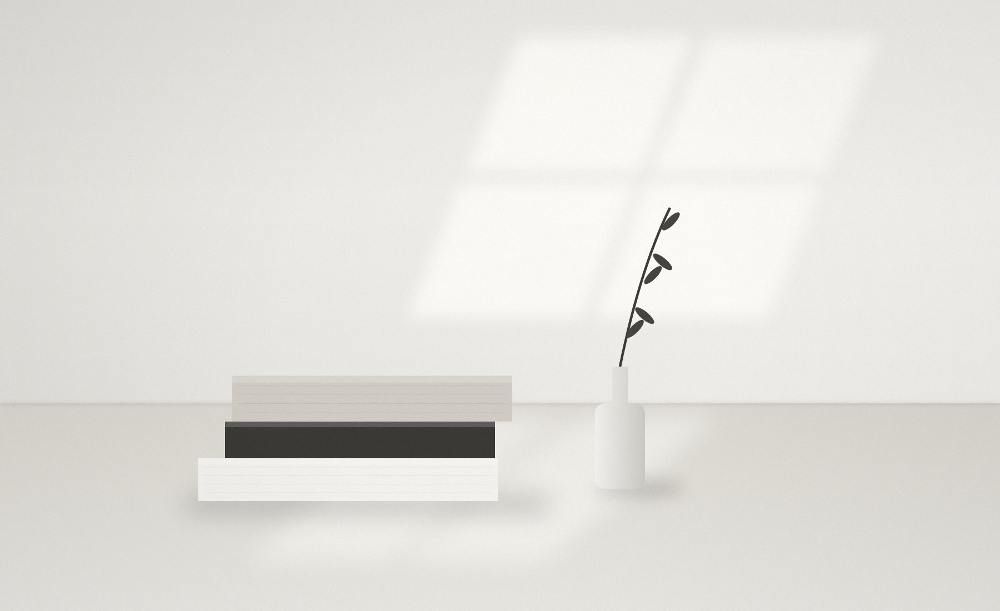

List
片付け・断捨離の情報を探す
種類
17 ITEMS
 No.022026.11.12何から手放す？ 後悔しにくい順番で進める片付け勢いで捨てて後悔するのは、たいてい「思い入れのあるもの」から手をつけたとき。判断しやすいものから順番に進めれば、迷いも後悔もぐっと減ります。2分で読めます
No.022026.11.12何から手放す？ 後悔しにくい順番で進める片付け勢いで捨てて後悔するのは、たいてい「思い入れのあるもの」から手をつけたとき。判断しやすいものから順番に進めれば、迷いも後悔もぐっと減ります。2分で読めます
No.092026.11.12本と思い出の品は、急いで手放さなくていい片付けでいちばん手が止まるのが、本と思い出の品。後悔しやすいものだからこそ、急がず、自分なりの残し方を決めることが大切です。2分で読めます No.102026.11.12リバウンドしないための「定期点検」のすすめ一度すっきりさせた部屋も、何もしなければ少しずつ物が戻ってきます。大がかりな片付けを繰り返さずに済むよう、短い点検を習慣にしましょう。2分で読めます
No.102026.11.12リバウンドしないための「定期点検」のすすめ一度すっきりさせた部屋も、何もしなければ少しずつ物が戻ってきます。大がかりな片付けを繰り返さずに済むよう、短い点検を習慣にしましょう。2分で読めます- 2026.11.02goodroom journal転勤族ミニマリストの「やめた家事」備え付け収納や大掃除を手放した実例。10月には5人のルームツアー記事も。
- 2026.09.30ねとらぼ引っ越し当日に荷造り開始、13分で完了Tokimaru Tanakaさんが14㎡の部屋から引っ越す動画が19万回以上再生。
- 2026.08note / みがるミニマリスト12年目の“持っていないもの”195選「全部捨てよう」ではなく、管理の負担になっているものを見つけるためのリスト。
- 2026.04みしぇる（ブログ）断捨離で後悔したもの、1000人調査64.7%が「後悔ゼロ」。後悔1位は衣類・バッグ・靴（14.6%）。
- @nken_secondエヌケンシンプリスト。1K一人暮らしで片付け・収納・自炊・掃除など「暮らしの楽しみ方」を発信。豊かさ派/男性
- @minimal_kurashiミニマリストますみママに贈るやさしいミニマリズム。片付け後の暮らしや考え方。ゆる派/効率派/女性
- @minimalife_kaoru香村薫「LINE片づけ」主宰。トヨタ式おうち片づけなど著書多数。効率派/女性
- @minimalist_kaonashi主婦ミニマリストかおなし片付けが苦手な主婦が、ミニマリストの暮らしを取り入れていく過程を発信。効率派/ゆる派/女性
- @minimalist_aponミニマリストあぽん「捨てて気楽に暮らす」がテーマ。手放すコツを分かりやすく。効率派/女性
- @minimalisttextbooミニマリストの教科書初心者向けにミニマリズムの基本をまとめて発信。思想派/運営・ユニット
- 筆子ジャーナル50代からの持たない暮らし。家計・手入れなど実用的。ほぼ毎日更新。
- goodroom journal「シンプリストの暮らしかた」ミニマリストの部屋と断捨離ルールの取材連載。
- みにまるなひげ断捨離歴11年、99.9%を手放した女性ミニマリスト。
- にほんブログ村「ミニマルライフ」個人ブログの新着を横断的にチェック。


Themes